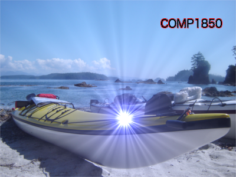
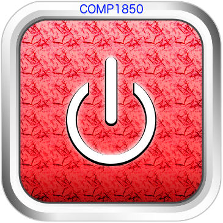

The original image has been rotated, resized and filtered as shown below. I have also included COMP1850 text and its border layer on the image:
I have designed a button as shown below:
This button was created with the free GIMP software, instead of photoshop, and I followed a button tutorial that is available here. In this tutorial, I learned the usage of various different layers to create gradients and outline borders, as well as the basic usage of the GIMP tool.
To start with, I created the red portion of the button as well as its border layers. Then the outside (white and grey) portion of the button was created through various gradients of the tool. Then, I gave my button a pattern inside using palm trees instead of carbon fiber in the tutorial since that option doesn't exist in my mac version. Then, I gave gradients inside the button as well to create contrasting shades. In addition, the white "on/off" portion of the button was drawn using partially erased circle and a straight line. I also gave it a little border slightly shifted down for 3D effect. Last but not least, I included COMP1850 text at the top using a contrasting blue color to indicate that I was indeed the one who created this button.